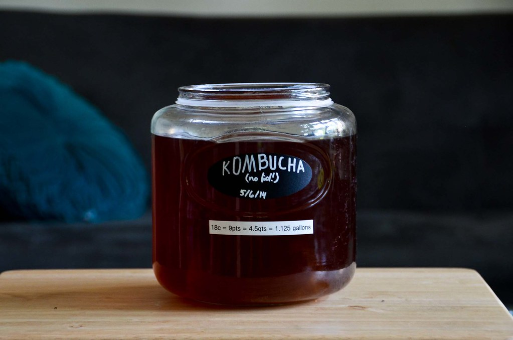

This recipe isfrom an online blog called "You Brew Kombucha" created by Angelica Kelly, and found on https://www.youbrewkombucha.com/guide-to-first-fermentation

Photo by: Sk, https://images.app.goo.gl/8aSsr9oMDVR31acD7, via flickr
Ingredients
4 cups water (to boil) + approx. 8 cups of cool/cold water
2-3 tbsp. loose-leaf black tea
¾ cup cane sugar
1 SCOBY(preferably purchased on Amazon)
2 cups kombucha starter tea
Conversion
Rate this Recipe
Directions
Make a tea concentrate by boiling 4 cups of filtered water. Once boiling, turn the heat off and steep your loose-leaf tea for 15 minutes.
Add ¾ cup cane sugar to the hot liquid and stir to dissolve.
Once 15 minutes has passed and your tea has steeped, strain out the leaves and add the hot sweet tea to a 1-gallon glass jar.
Add approx. 8 cups of cool/cold water to the jar to dilute the tea and bring the temperature down. The temperature of the liquid in the jar should be between 70 – 90 degrees Fahrenheit before you move on to next step.
Once the temperature is just right, add 2 cups of starter tea from a previously brewed batch of kombucha + the SCOBY.
Cover the jar with a clean, tight-weave cloth (a bandana, tee-shirt, even a coffee filter would work) and secure it with a rubber band.
Let it sit at room temp (between 70 – 85 degrees) in a shady spot with decentairflow for around a week.
Leave it alone for at least a few days. No peeking or jiggling the vessel! Otherwise, you might interrupt SCOBY growth.
You can start tasting your brew at around the 5-day mark. (Once you get the hang of it, you’ll get a feel for how long it takes for your brew to get to a state of “doneness” that you like.) If you like it less sweet, let it keep going so the bacteria and yeast can continue to eat the sugars. You can continue tasting each day until it tastes right to you. I tend to ferment mine for 7-9 days before I bottle.